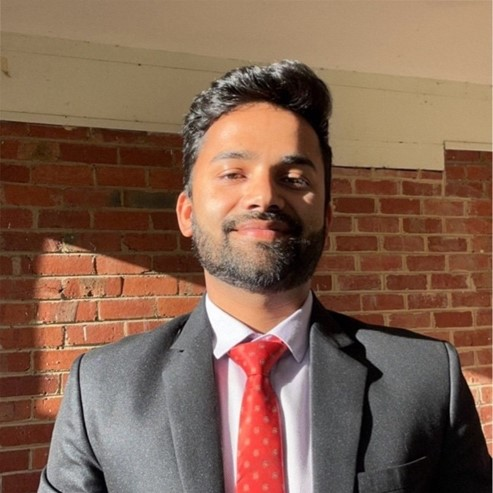

Day 3 - Data Science, Machine Learning, and AI in Environmental, Social and Governance (ESG)
Keynote
Unearthing the Past: Using Text-Mining to Support the Repatriation of First Nations Ancestral Remains


Abstract:
One of the most urgent issues facing Australian and other First Nations peoples is the repatriation of their ancestors' bodily remains, many of which are still held in Western scientific institutions. The return of these remains for proper reburial is a critical matter of cultural and ethical importance. However, success in this effort often depends on locating records—scattered across scientific and historical literature from 1790 to 1970—that document the theft, donation, sale, or exchange of these remains between institutions. In this talk, I will explore how text-mining techniques can be applied to identify and extract this crucial information from vast textual archives, providing invaluable support for repatriation. The talk will highlight practical challenges, innovative approaches and the potential impact of these technologies in empowering communities to reclaim their cultural heritage.
Short Biography:
Dr Richi Nayak is a professor at the School of Computer Science and Deputy Director of the Centre for Data Science, Faculty of Science, Queensland University of Technology, Brisbane, Australia. She is a leader in the field of machine learning with over 25 years of experience. Her research interests encompass data and text mining, deep learning, matrix and tensor factorisation, social media mining and personalisation. She has successfully overseen 25+ industry-related projects, delivering innovative machine-learning solutions adopted by industry and government sectors. She pioneered a groundbreaking data-driven machine learning-based marketing strategy automation technology, commercialised by a top-10 marketing strategy consultancy in the USA and Australia. She also developed a deep learning-based bias detection approach commercialised by iShield.ai, aiding Fortune 500 companies in content management. In recognition of her exemplary contributions to the field of Data Analytics, she received the 2016 Women in Technology Infotech Outstanding Achievement Award
Industry Panellists / Speakers

Gillian Vesty is a Professor and Deputy Dean L&T in the School of Accounting, Information Systems and Supply Chain at RMIT University, Melbourne, Australia. She is RMIT College of Business and Law, AACSB Assurance of Learning Coordinator. Gillian is a member of CPA Australia, a Board Member of IMA ANZ chapter. Her research interests seek to align management accounting’s performance evaluation and strategic budgeting with social impact research that address health and wellbeing challenges from an environmental and value-based healthcare perspective. Gillian is an active Board Member of Games for Change, Asia Pacific, fostering the nexus between simulated artefacts in the form of serious games to provide a powerful vehicle for ongoing experimental research. Gillian is on the editorial board of Accounting Auditing and Accountability Journal.

Mitch Tomazic is a Director in EY’s Melbourne AI & Data team. With over twenty years’ experience in the development and implementation of IT strategy Mitch has witnessed many technology trends. Mitch has worked across multiple industries including Telecommunications, Retail, Logistics, Health and Travel with poor data management being one constant. Mitch is passionate about taking organisations on their data journey by improving data management capabilities and ensuring that investment in data is providing business value. Currently Mitch is focused on working with clients on their ESG reporting requirements by utilising multiple technologies to drive efficiency and effectiveness.

Rakesh Singh is an Enterprise Architect in the Customer Strategy team at Oracle Corporation. His work at Oracle bridges the gap between business and technology by combining a deep understanding of technologies, applications, best practices, and architectural patterns to drive digital transformation initiatives that meet business objectives for his customers. Throughout his career, Mr. Singh has worked with a diverse range of customers, from large enterprises to small organisations. His experience spans Federal and State Government agencies, major banks, and small non-profits, demonstrating his versatility in applying technological solutions across various sectors and organisational scales. In addition to his primary role, Rakesh serves as the lead for the Sustainability Community of Practice at Oracle JAPAC. This community brings together people and ideas to work towards a sustainable future using technology. Through this initiative, Rakesh fosters collaboration and innovation, leveraging technological solutions to address pressing environmental and sustainability challenges. Rakesh brings a unique blend of technical expertise, strategic vision, and commitment to sustainability in driving digital transformation and sustainable practices in the corporate world.

Dr. Arbind Agrahari Baniya
Department of Energy, Environment and Climate Action, Victoria
Dr Arbind Agrahari Baniya is an emerging AI and deep learning specialist with a foundation in data-driven smart solutions, research, innovation and commercialisation. He holds a PhD in Information Technology from Deakin University, with a focus on computer vision and deep learning. Dr Agrahari Baniya has collaborative experience leading multi-organisational projects, particularly in the agricultural technology sector, where he applies AI/ML and data science solutions for Victorian apiary and horticulture industries. In his current role as a Systems Development Researcher at the Department of Energy, Environment and Climate Action (DEECA), Dr Agrahari Baniya continues to lead the design, development, and delivery of co-invested data & AI/ML projects, managing big data infrastructures, developing new proposals, supervising PhD and Masters researchers, and pursuing research innovation and commercialisation opportunities. More recently, Dr Agrahari Baniya has been working on data and infrastructure research for ESG credentialling in the agriculture sector. Throughout his career, Dr Agrahari Baniya has contributed to academia and industry with numerous publications and has been actively involved in professional and educational roles, including teaching, reviewing for prestigious journals, and participating in various conference committees. With his additional roles as a Sessional Academic and Research Fellow at Deakin University, he remains committed to advancing applied AI/ML projects, employing emerging generative AI paradigms for data-centric solutions, and driving multidisciplinary projects that lead to meaningful outcomes in shaping the AI industry landscape.